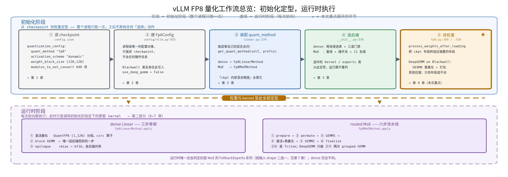
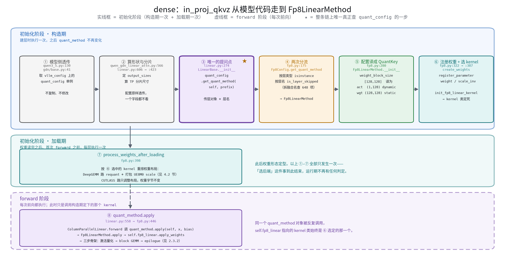
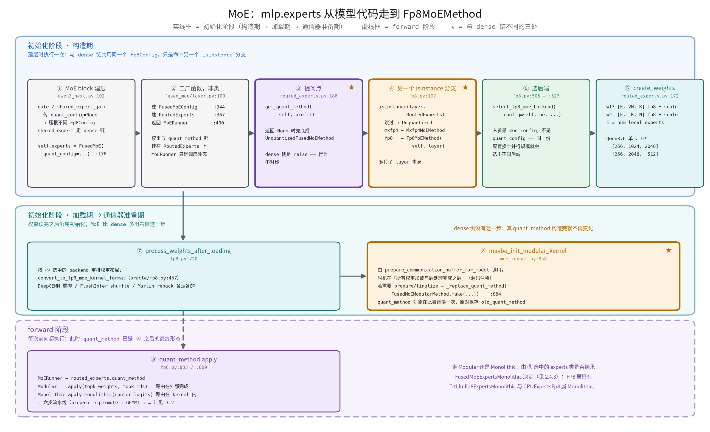
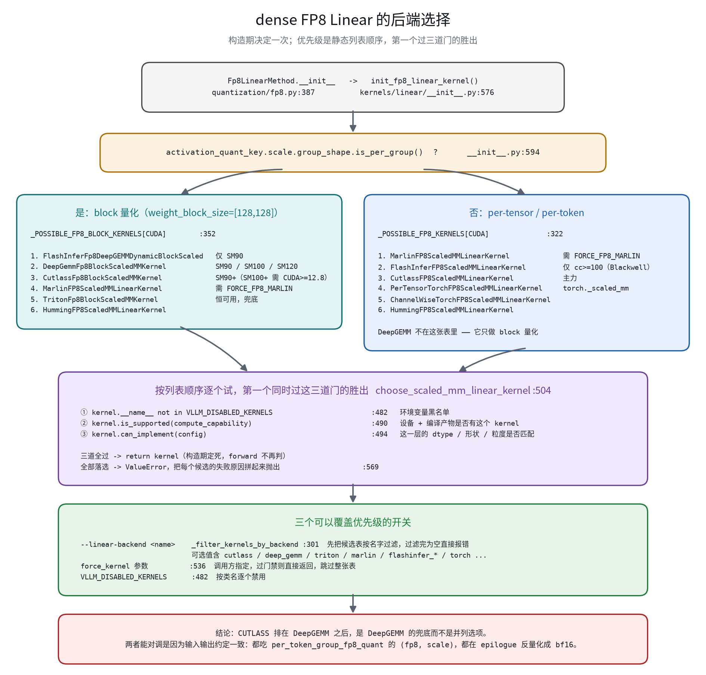
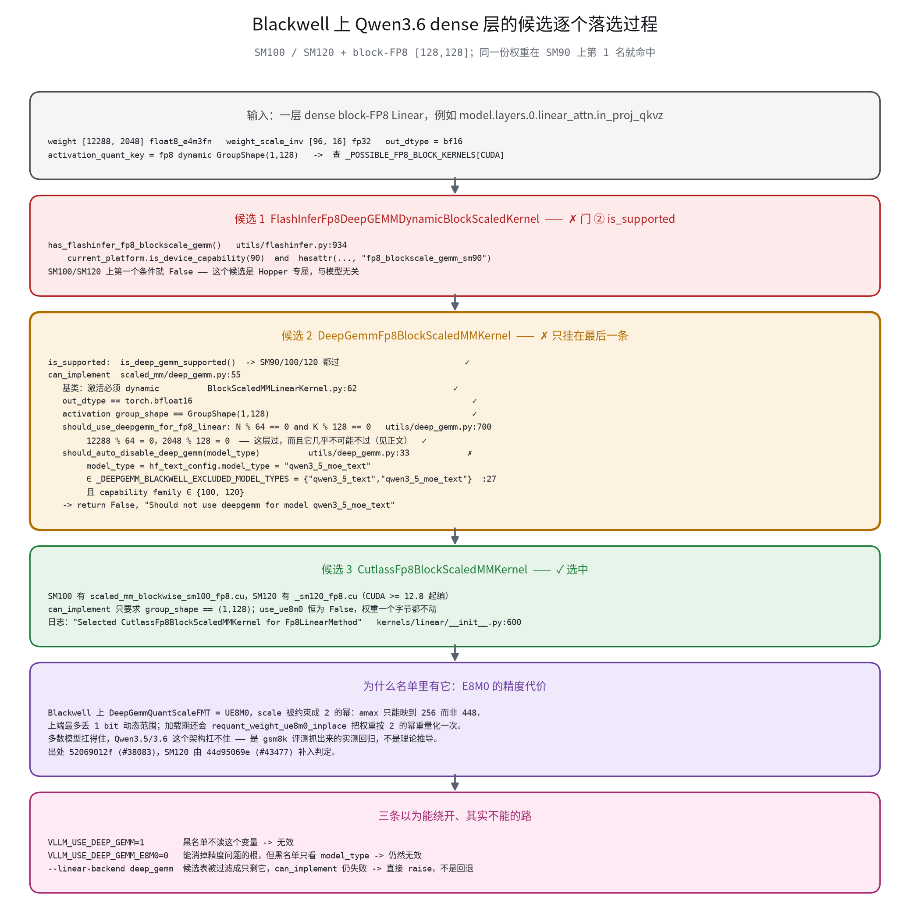
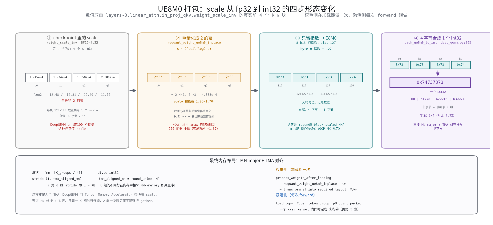
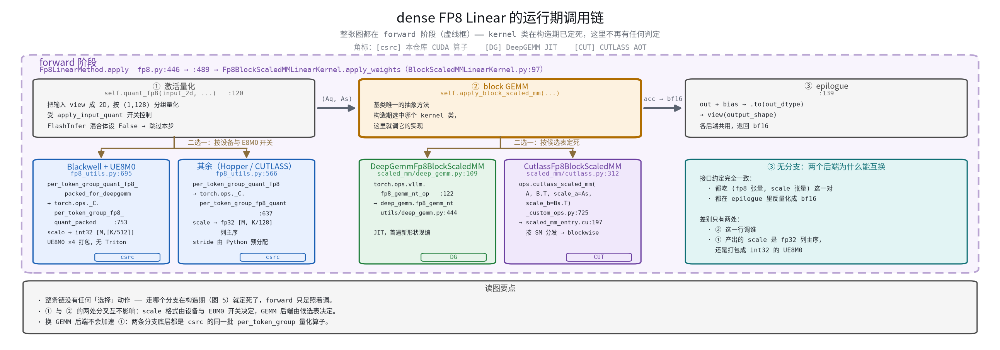

技术分享 · 汇报大纲
vLLM FP8 量化工作流
—— 以 Qwen3.6-35B-A3B-FP8 为例
一个 FP8 模型跑起来时，哪些算子被量化、dense 与 MoE 各自怎么选后端、 为什么加载完权重还要再改一遍、Blackwell 上那条 DeepGEMM 黑名单是怎么来的、 运行时一次前向到底发生了什么。
vLLM 的 FP8 量化分成两段：初始化阶段做完全部决策并把权重改成目标形态，运行时阶段只是照着执行。
「用哪个 GEMM 后端」「scale 存成什么格式」「权重要不要重排」这些问题全部在服务启动时就有了答案，一次前向里不再有任何选择动作。后面 50 分钟都是这句话的展开。
开场
4 分钟主旨与三个前置结论
4′「今天讲的不是 FP8 的数值格式，而是 vLLM 里 FP8 的决策链路——从 checkpoint 落到显卡上的这一路，谁在什么时候决定了什么。」

三个必须先立住的前置结论
dense 与 MoE 的入口、候选表、选择算法、覆盖开关一律不共享。所以「我装了 DeepGEMM，模型就在用 DeepGEMM」这个推断不成立。Qwen3.6 在 Blackwell 上恰好就是 dense 不用、MoE 可能用。
router、各种门控、layernorm、卷积、状态参数一律保持 BF16。checkpoint 用 modules_to_not_convert 的 648 项把它们显式列了出来。
FallbackExperts 系列 —— 留到第 7 段讲。
第一幕 · 初始化：从 checkpoint 到权重定型
27 分钟量化了什么 —— Qwen3.6 的实际情况
5′「先把靶子摆出来。以下所有数据读自 config.json 和 safetensors 头，不是推测。」
checkpoint 的四个字段，各自决定一整条路
| 字段 | 取值 | 决定了什么 |
|---|---|---|
quant_method | fp8 | 用哪个配置类（Fp8Config）和哪套 method |
weight_block_size | [128,128] | 走 block 量化那条路 —— 第 3 段的 block 候选表、DeepGEMM 才有可能被选上 |
activation_scheme | dynamic | 激活没有预存 scale，每次 forward 现算（第 5 段） |
modules_to_not_convert | 648 项 | 哪些层保持 BF16 |
text_config.model_type = qwen3_5_moe_text。它会在第 3 段决定 dense 侧的最终结果 —— 埋个扣子，这里先点一句。模型结构：40 层按 [linear_attention ×3, full_attention] 循环，即 30 层 Gated DeltaNet + 10 层标准注意力；hidden_size 2048；MoE 部分 256 个 routed expert、top-8、moe_intermediate_size 512，另有 1 个同为 512 宽的 shared expert。

o_proj 属于 dense，不属于 MoE。它在注意力之后、残差之前。② shared expert 属于 dense。它和 routed experts 在同一个 MoE block 里、形状完全相同（都是
[512,2048] 和 [2048,512]），却由两套互不相干的机制选后端 —— 这就是「其一」在模型结构上的具体落点。
规律：被量化的都是大矩阵乘；保持 BF16 的分两类
- 太小不值得 ——
in_proj_a/in_proj_b只有32×2048，量化省不下多少，反而多两次量化/反量化开销。 - 对误差敏感 —— router 一旦出错，选出的专家就全错了，误差不是「变模糊一点」而是「换了一批专家」；layernorm、
A_log/dt_bias这类状态参数直接决定递推稳定性。
GDN 层能把这条规律讲透（图 2 左下面板）：同一份 x 喂给四个投影，in_proj_b 经 sigmoid 变成写入强度 β，in_proj_a 配合 A_log/dt_bias 变成衰减率 g —— 产出的是直接控制递推稳定性的门控标量，所以保持 BF16。而 in_proj_z 虽然同为门控用途，却是 [4096,2048] 的大矩阵乘，仍然被量化。判据是「是不是大矩阵乘 + 误差敏不敏感」，不是「叫不叫门控」。
配置怎么传到每一层
4′「648 项跳过列表是怎么落到具体某一层上的？答案比想象的简单 —— 代码里只有一处在做这件事。」

quant_config 的五步构造过程。它是进程级唯一的一个对象。关于 quant_config 只讲两条
- 它只描述 checkpoint，不描述硬件。它不知道跑在哪张卡上，也不知道该用 CUTLASS 还是 DeepGEMM。所有硬件相关的决策都发生在后面各层的
quant_method构造函数里。 - 有两处会往它上面补写字段（图 3 第 4 步）：
config/vllm.py:931的 Blackwell 黑名单把use_deep_gemm置False；model_loader/utils.py:284把packed_modules_mapping挂上去 —— 后者是必需的，因为 checkpoint 里in_proj_qkv/in_proj_z是两个张量而 vLLM 建的是融合的in_proj_qkvz，没有这张映射表，按层名跳过的逻辑会全部失配。


两条链形状相似，讲三个对比就够
LinearBase.__init__（linear.py:274），MoE 在 RoutedExperts.__init__（routed_experts.py:186），都是一句 quant_config.get_quant_method(self, prefix)。
传的是层对象 + 层名 —— 同一个 Fp8Config 被问几百次、每次 prefix 不同，这就是「一份 checkpoint 内部混合精度」的全部实现机制，代码里没有第二处。
- 返回
None的行为不对称。dense 侧raise，MoE 侧静默兜底成UnquantizedFusedMoEMethod—— 排查时注意，MoE 侧「悄悄没量化」是可能的。 - MoE 多一个阶段。dense 是「构造期 → 加载期 → forward」三段；MoE 在加载期之后多一个通信器准备期（图 5 的 ⑧），
maybe_init_modular_kernel可能把quant_method整个替换成FusedMoEModularMethod的包装。源码注释写明时机是「所有权重加载与后处理完成之后」（moe_runner.py:854），仍属初始化阶段。 - 还有一类层压根不问
Fp8Config：mlp.gate（router）和shared_expert_gate建层时显式传quant_config=None（qwen3_next.py:138/:146）。所以它们保持 BF16 与 648 项名单里有没有它们无关。
后端怎么选
8′「这一段是全场信息密度最高的地方。核心只有一句：列表顺序就是优先级 —— 没有打分、没有 benchmark、没有 autotune。」
3.1 dense：两张候选表 + 三道门禁 （3′）

第一步按量化粒度二选一张表（kernels/linear/__init__.py:594）：有 weight_block_size 走 block 表，否则走 per-tensor/per-token 表。这一步之后候选集合就固定了。DeepGEMM 只存在于 block 表 —— per-tensor 权重根本不会遇到它。
| 优先级 | kernel 类 | 可用条件要点 |
|---|---|---|
| 1 | FlashInferFp8DeepGEMMDynamicBlockScaledKernel | 仅 SM90（符号名硬编码 fp8_blockscale_gemm_sm90） |
| 2 | DeepGemmFp8BlockScaledMMKernel | SM90/100/120；需 bf16 输出、N/K 对齐、不在 Blackwell 黑名单 |
| 3 | CutlassFp8BlockScaledMMKernel | SM90+，只要求 group_shape == (1,128) |
| 4–6 | Marlin / Triton / Humming | Marlin 需显式开关；Triton 恒可用，最终兜底 |
每个候选按序过三道门：VLLM_DISABLED_KERNELS（人为开关）→ is_supported(cc)（这台机器能不能跑）→ can_implement(config)（这一层能不能跑）。三道全过即返回，构造期定死。
create_weights 而不是 Fp8LinearMethod.__init__？很实际的原因 —— should_use_deepgemm_for_fp8_linear 要查 N % 64 == 0 and K % 128 == 0，而 weight 参数是在 create_weights 里才 register_parameter 的，此前拿不到 shape。3.2 MoE：重排 + 硬开关 + 11 道检查 （2′）

- S0 重排候选表。
_get_priority_backends只重排、不删除。最关键一条：严格 SM90 + block-fp8 + 单机 TP 时，TRITON被显式提到 DeepGEMM 前面 —— 所以 Hopper 上即使装了 deep_gemm，MoE 默认也不会用它。另一条：family(100)+ DeepEP v2 时把FLASHINFER_TRTLLM提到最前。 - S2–S6 五个硬覆盖开关，先到先得，命中即返回，不支持就直接抛错、不回退。
- S7 主循环，每个 backend 的 experts 类逐个过 11 道检查（
modular_kernel.py:536）。其中一条对 Blackwell 影响很大：FlashInferExperts（FI-CUTLASS）的 block-fp8 限定is_device_capability(90)，Blackwell 上只接受 nvfp4/mxfp4。
Fp8MoEMethod 传的 allow_vllm_cutlass=False，所以 vLLM 自带的 CUTLASS MoE 在纯 FP8 路径上默认不参选。②
VLLM_USE_DEEP_GEMM 的判据是 envs.is_set()，必须显式 export 过才生效 —— 「默认开着」和「显式设成 1」是两种不同的行为。
3.3 落点：Qwen3.6 在 Blackwell 上实际选中了谁 （3′ · 本段最重要）

- FlashInfer 混合体在门 ② 落选，与模型无关 —— block 量化下 FlashInfer 只有 SM90 kernel。
- DeepGEMM 前四条检查全过，只挂在最后一条
should_auto_disable_deep_gemm(model_type)—— 一条只在 Blackwell 生效的模型黑名单，Qwen3.6 系列的text_config.model_type恰好都在名单里。（第 1 段埋的扣子在这里收） - CUTLASS blockwise 全过，选中。
select_fp8_moe_backend 完全不消费这个黑名单判定。黑名单的成因是下一段要展开的 UE8M0 精度代价。引入它的提交是
52069012f（#38083），同一提交还加了 gsm8k 评测配置 —— 这是拿实际精度评测抓出来的回归，不是理论推导。
VLLM_USE_DEEP_GEMM=1、VLLM_USE_DEEP_GEMM_E8M0=0、--linear-backend deep_gemm）。其中第三条会导致启动失败而非回退。★ process_weights_after_loading：为什么加载完还要改权重
10′「这是全场的核心。它回答两个问题：为什么必须做，以及具体怎么做。也是上一段那条黑名单的成因所在。」
4.1 问题定义 （1′）
权重从 safetensors 读进来时是 checkpoint 的布局：FP8 权重 [N,K]，scale 是 [N/128, K/128] 的 bf16 张量，值是任意浮点数。
但每个 GEMM 后端对权重和 scale 的要求都不一样：DeepGEMM 在 Blackwell 上要 2 的幂的 scale 且打包成 int32；Marlin 要自己的交错权重布局；FlashInfer 要 shuffle 过的权重；CUTLASS 则原样就能用。
process_weights_after_loading 就是这道转换，在权重读完之后、首次 forward 之前每层执行一次。它是初始化阶段的最后一步，也是后端差异第一次落到权重字节上的地方。
4.2.1 为什么必须做：硬件根据 （3′）

先看数学。任何浮点数都是 v = ±m × 2^e。乘以 2 的幂时 v × 2^k = ±m × 2^(e+k) —— 尾数一位不动，只对指数域做整数加法，不需要乘法器、结果逐位精确；乘以任意 fp32 则需要完整 FMA（尾数相乘 + 规格化 + 一次舍入）。
再看硬件。Blackwell 第五代 TensorCore 的 tcgen05.mma 提供 block-scale 变体，它的 scale factor 操作数（SFA/SFB）按 OCP Microscaling 规范定义为 E8M0 字节（8 bit 纯指数，bias 127，无符号位无尾数位）。scale 在 MMA 流水内部以指数加完成，与乘累加融合、零额外指令。
作为对照，vLLM 的 CUTLASS blockwise kernel 显式声明 ElementBlockScale = float：MMA 用普通 FP8 指令、不携带硬件 SF 操作数，每个 K-block 的部分和在 CUDA core 上以 fp32 FMA 乘 s_a × s_b 后并入主累加器（软件 promotion）。任意 fp32 值都能参与乘法，所以无格式约束、权重零改动。
| 条件 | 格式 | 含义 |
|---|---|---|
| E8M0 关闭 | FLOAT32 | fp32 张量，任意值 |
| E8M0 开 + SM90 | FLOAT32_CEIL_UE8M0 | 值取 2 的幂，仍存 fp32 张量 |
| E8M0 开 + SM100/120 | UE8M0 | 值取 2 的幂，4 合 1 打包进 int32 |
注意 SM90 那一档只做「取 2 的幂」不做打包 —— 因为 Hopper 没有这条硬件指令。（仲裁逻辑在 deep_gemm.py:49 DeepGemmQuantScaleFMT）
4.2.2 具体怎么做：四步形态变化 （3′）

layers-0.linear_attn.in_proj_qkv.weight_scale_inv 的前 4 个 K 向块。- checkpoint 原始形态。四个 scale 是
1.745e-4 / 1.974e-4 / 1.850e-4 / 2.880e-4，log2分别是−12.48 / −12.31 / −12.40 / −11.76—— 全是非 2 的幂。每个占 4 字节。 - 重量化成 2 的幂（
requant_weight_ue8m0_inplace，fp8_utils.py:989）。核心是s ← 2^ceil(log2 s)，四个 scale 变成2⁻¹² / 2⁻¹² / 2⁻¹² / 2⁻¹¹。 - 只留指数 → E8M0。
byte = 指数 + 127，四个 scale 变成0x73 / 0x73 / 0x73 / 0x74。存储从 4 字节降到 1 字节。 - 4 个字节合成 1 个 int32（
pack_ue8m0_to_int，deep_gemm.py:395）：0x73 | 0x73<<8 | 0x73<<16 | 0x74<<24 = 0x74737373。
requant_weight_ue8m0_inplace 的四步：
1 旧 scale 展开 repeat_interleave 把 [M/128, K/128] 扩成 [M, K]
2 反量化 w_dq = wq.float() × s_exp 还原到 fp32 数值域
3 UE8M0 重量化 per_block_cast_to_fp8(w_dq, [128,128], use_ue8m0=True)
amax → s = amax/448 → s ← 2^ceil(log2 s) → (w_dq/s).to(fp8)
4 原地写回 wq.copy_() / ws.copy_() 不新分配显存最终布局：形状 [mn, ⌈K_groups/4⌉]、dtype int32、stride (1, tma_aligned_mn)。第 0 维 stride 为 1 意味着同一个 K 组的不同行在内存中相邻 —— 这就是 MN-major（列主序）。之所以这样排并把 MN 维按 4 对齐，是为了 TMA：DeepGEMM 用 Tensor Memory Accelerator 整块搬运 scale，只有连续且对齐才能一次拷贝。综合下来 scale 的存储/带宽降到 fp32 方案的 1/4。
4.2.3 代价：真实数据实测 （1.5′）
| 指标 | requant 前 | requant 后 |
|---|---|---|
| scale 是 2 的幂的比例 | 0% | 100% |
| scale 上调倍数 new/old | — | min 1.077 / mean 1.332 / max 1.533 |
fp8 值域利用 |wq|.max | ≈ 448 | 416 / 448 |
| 相对量化误差 | 0.02250 | 0.03074（放大 1.366×） |
原理上说得通：scale 被上取整，一个 block 的 amax 就只能映射到 256（2^8）而不是 E4M3 的最大值 448，上端白白让出至多 1 bit 的动态范围。
scripts/demo_requant_ue8m0.py，只依赖 safetensors 和 CPU torch，现场可复现。4.2.4 后果：Blackwell 模型黑名单 （1′）
多数模型扛得住这点损失，Qwen3.5/3.6 这个架构扛不住。于是有了第 3 段那条黑名单（utils/deep_gemm.py:27），它要避开的正是加载期这次重量化。两个边界要说清楚：
- 黑名单只管 dense。MoE 侧走 DeepGEMM 时照常执行重量化 —— 对 256 个专家的 w13/w2 共 512 个矩阵各做一次，加载期一次性开销。
- 判定写在两个地方，起作用的是后一个。
VllmConfig.__post_init__会把quant_config.use_deep_gemm置 False，但真正让候选落选的是DeepGemmFp8BlockScaledMMKernel.can_implement里独立的那次调用。所以把前者强行改回True也没用。
4.2.5 一个常被追问的问题：为什么 MoE 侧没有同样的黑名单 （1.5′ · 建议保留，这段最能体现结论的严谨度）
52069012f，改动的四个文件里根本没有 MoE 侧；fp8.py 那 9 行全部落在 Fp8LinearMethod.__init__，而 Fp8MoEMethod 与 select_fp8_moe_backend 一次都没读过 use_deep_gemm。
所以 MoE 不是「被评估后判定可以接受」，而是这次修复的作用域从一开始就只覆盖 dense。
作者只修 dense 就收工，有三个可查证的原因：
- Blackwell 上 MoE 默认压根不走 DeepGEMM。优先级里
FLASHINFER_TRTLLM排在DEEPGEMM前面，SM100 + block-fp8 默认选中的是TrtLlmFp8ExpertsMonolithic。默认部署里「MoE + DeepGEMM + UE8M0」这个组合不会被触发，修它没有收益。 - 修复由评测驱动，评测覆盖到哪就修到哪。同一提交新增了
models-qwen35-blackwell.txt的 gsm8k 回归配置 —— 跑出掉点 → 定位到 dense 的 DeepGEMM E8M0 → 关掉 → 分数恢复。这是一次目标明确的 bugfix，不是对称的双路评估。 - 两侧的误差暴露面确实不同。dense 的量化投影在每一层、每个 token 的关键路径上；routed expert 每个 token 只激活 256 个里的 8 个，误差累积次数差一个量级。但这是结构上的合理推断，不是仓库里有实测数据支撑的结论。
VLLM_USE_DEEP_GEMM=1），512 个专家矩阵会照常做 UE8M0 重量化，误差放大倍数与 dense 同源（实测 ×1.37），而这条路没有被任何评测覆盖过，也没有黑名单保护。真要用，建议自己先跑一遍精度评测。
4.3 收口：各后端做了什么 （1′ · 一张表带过）
| 改数值 | 改布局 | 什么都不做 | |
|---|---|---|---|
| dense | DeepGEMM(Blackwell) 重量化、Marlin repack | DeepGEMM(SM90)、CUTLASS、Triton 的 block strategy | — |
| MoE | DeepGEMM 重量化、Marlin repack、AITER shuffle | FlashInfer shuffle | Triton、vLLM CUTLASS |
这张表就是 4.1 那个问题的答案：process_weights_after_loading 存在，是因为后端对权重形态的要求分布在「完全不改 → 只改布局 → 改数值」这个谱系上，而 checkpoint 只能存一种形态。
第二幕 · 运行时：一次前向发生了什么
13 分钟dense：三步骨架
5′「第一幕讲完，运行时其实没多少东西了 —— 这正是主旨那句话要的效果。dense 侧只有三步。」

① if self.apply_input_quant: ← 类级开关
q_input, As = self.quant_fp8(input_2d, ...) 激活量化
else:
q_input = input_2d 直接送 BF16
② out = self.apply_block_scaled_mm(A, B, As, Bs) ← 唯一的抽象方法
③ out = (out + bias).to(out_dtype).view(shape) epilogueapply_input_quant 控制 —— FlashInfer 那两个类置为 False，它们接受 BF16 输入、在 kernel 内部自行转 FP8。
5.1 激活量化：[1,128] 的由来 （2′）

执行者是 kernel 构造期就定死的 QuantFP8(static=False, group_shape=(1,128))。为什么权重是 [128,128] 而激活是 [1,128]？
GEMM 按 128 切 K 片，片内先做 FP8 TensorCore 点积再乘 scale 累加：
acc += (Aq[m,kt]·Wq[n,kt]ᵀ) × As[m,kt] × Bs[n,kt]
合法的前提是片内 As、Bs 都是常数，反量化因子才能提到求和号外面。所以激活的组宽必须等于权重块的 K 宽 —— 代码里是强制的（fp8.py:307 直接拿 weight_block_size[0] 构造），不是独立配置项。
激活逐 token 幅值差异大、常有离群值；[1,·] 让离群 token 的 absmax 只污染它自己那一组。权重则相反 —— 分布平稳、可离线精调，N 方向 128 行共享一个 scale 就够，还省 128 倍 scale 存储。
5.2 与第 4 段呼应：权重离线打包，激活在线打包 （1.5′）
Blackwell + DeepGEMM 时，GEMM 两侧的 scale 都是 UE8M0，但生成时机完全不同：
| 谁做 | 何时 | 怎么做 | |
|---|---|---|---|
| 权重侧 | process_weights_after_loading | 加载期一次 | 重量化 + transform_sf_into_required_layout 打包（第 4 段） |
| 激活侧 | torch.ops._C.per_token_group_fp8_quant_packed | 每次 forward | 一个 csrc kernel 内同时完成量化、取指数、4 合 1 打包 |
激活侧之所以能一趟做完，是因为激活本来就要现场量化 —— 顺手把 scale 直接写成 int32 的 TMA 对齐布局，省掉一趟额外的显存往返。这个 kernel 用位运算提取 UE8M0（取 float 的指数位，尾数非零则 +1，与 exp2f(ceilf(log2f(x))) 位级等价但没有超越函数开销），全寄存器驻留、无 shared memory。
per_token_group 算子，区别只在 scale 的输出排布（fp32 列主序 vs int32 打包）。
MoE：六步流水线
5′「MoE 侧多了路由带来的散乱数据搬运，但 GEMM 后端仍然只负责其中两步。」

contiguous 布局下六步：prepare 量化 → permute 重排 → GEMM1 → 激活+再量化 → GEMM2 → finalize 合并。
csrc → Triton → DG → Triton → DG → Triton。
6.1 permute / finalize 背后的三个 Triton 算子 （2.5′ · 时间紧可压成一句）
它们解决同一个问题：grouped GEMM 要求同一专家的 token 在内存中连续、且每段起点对齐到 128，而路由结果天然是散乱的。
count_expert_num_tokens—— 一个 program 负责一个专家，扫一遍topk_ids数出属于自己的元素个数。若 prepare/finalize 是 DeepEP 一类通信器，通信本身已产出这个计数，则直接复用、不启动这个 kernel。ep_scatter—— 两个 kernel 串联。kernel 1 把每专家 token 数向上取整到 128 再前缀和得到分段起点，并填m_indices；expert_ids调用前已整体初始化为 −1，padding 行保持 −1，DeepGEMM 的 scheduler 见负数就跳过整个 block。kernel 2 按 token 搬运，用tl.atomic_add原子抢占段内槽位，拷贝 fp8 行与 scale，并记录inv_perm。MXFP8 的 scale 打包也在这个 kernel 里现场完成。ep_gather—— 用inv_perm反查每个 (token, expert) 对在 GEMM2 输出中的源行，乘topk_weight累加进 fp32 累加器后写回。它同时完成 unpermute 与 topk 加权求和 —— 所以finalize_weight_and_reduce_impl返回TopKWeightAndReduceNoOP()。
这三个算子只服务 DeepGemmExperts。走 FlashInfer TRTLLM（Monolithic，路由与重排都在 flashinfer kernel 内部）时完全不会触及 —— 也就是说，Qwen3.6 在 B200 的默认部署下根本走不到这一节。
6.2 M_sum 膨胀与 padding 跳过 （1.5′ · 这个数字很抓人）
M_sum 不等于 M × topk，而是 Σ_e round_up(专家 e 的 token 数, 128)。以 Qwen3.6 为例（256 专家、top-8），prefill 256 个 token 时真实工作量 2048 行，而 M_sum = 34560 行 —— 接近 17 倍膨胀。
expert_ids 是 −1，DeepGEMM 跳过整个 block；三个 Triton 算子的工作量也都与真实 token 数成正比，与 M_sum 无关。
运行时还有判定吗
3′「回到主旨那句话，做个诚实的补充：有一处例外。」
构造期定死之后，apply_weights 只是照着调。
静态门禁是 AND（两个子实现都要支持才会被选中），运行期再按输入 shape 二选一。
# TritonOrDeepGemmExperts._select_experts_impl triton_deep_gemm_moe.py:83
if is_deep_gemm_e8m0_used() or _valid_deep_gemm(hidden_states, w1, w2):
return self.experts # DeepGemmExperts
return self.fallback_experts # TritonExpertsVLLM_USE_DEEP_GEMM_E8M0 默认开），会把后面整串形状检查短路掉。这对 Qwen3.6 很关键：
_valid_deep_gemm 里有一条 N <= 512 直接返回 False，而这份权重的 w2 是 [256, 2048, 512]、N 正好是 512 —— 默认配置下被短路了；一旦把 VLLM_USE_DEEP_GEMM_E8M0 置 0，每次 forward 都会回退到 TritonExperts。也就是说：关掉 E8M0 不只是「换个 scale 格式」，还会顺带换掉整个 MoE experts 实现。
收尾
6 分钟结论矩阵与线上排查
4′「前面都是机制，这一页是可以直接带走用的。」
8.1 结论矩阵 —— 各设备实际落到哪个后端
| 设备 / 并行 | dense Linear | routed MoE |
|---|---|---|
| Hopper H100/H800，TP only | FlashInfer+DeepGEMM；未装 FlashInfer 则 DeepGEMM | TritonExperts（oracle 把 TRITON 提前） |
| Hopper，EP > 1 | 同上 | FlashInfer CUTLASS |
| Blackwell B200（SM100） | CUTLASS blockwise | FlashInfer TRTLLM（Monolithic） |
| RTX 50 系（SM120） | CUTLASS blockwise | DeepGEMM（FI-TRTLLM 只认 SM100） |
| Ada 4090 / L40S（SM89） | Triton block scaled | TritonExperts |
任意 H/B + VLLM_USE_DEEP_GEMM=1 | H 是 DeepGEMM；B 仍是 CUTLASS | DeepGEMM |
8.2 怎么确认线上实际走了哪条路
"Selected %s for %s" kernels/linear/__init__.py:600
→ dense kernel 名。注意 scope="global"，全进程只打一条，不是每层一条
"Using ... Fp8 MoE backend out of potential backends: [...]" oracle/fp8.py
"Auto-disabled DeepGemm for model_type=%s on Blackwell ..." config/vllm.py:940
"DeepGemm disabled for N <= 512 ..."（debug 级） experts/deep_gemm_moe.py:89要确认具体某一层用了什么，只能起服务后打印：
m = llm.llm_engine.model_executor.driver_worker.model_runner.model
lin = m.model.layers[0].linear_attn.in_proj_qkvz
print(type(lin.quant_method).__name__, type(lin.quant_method.fp8_linear).__name__)
qm = m.model.layers[3].mlp.experts.routed_experts.quant_method
print(type(qm).__name__, getattr(qm, "fp8_backend", None) or qm.old_quant_method.fp8_backend)五条常见误解 · 收束
2′「最后用五条误解把全场串一遍 —— 每一条都对应前面的一段。」
| 误解 | 纠正 | 对应 |
|---|---|---|
| 「装了 DeepGEMM 就在用 DeepGEMM」 | dense 与 MoE 分别决定，Qwen3.6 on SM100 恰好是 dense 不用、MoE 可能用 | 第 0/3 段 |
「o_proj 和 shared expert 属于 MoE」 | 都属于 dense 路径 | 第 1 段 |
「--linear-backend deep_gemm 能强制用 DeepGEMM」 | 语义是「缩小候选范围」，被留下的候选仍要过三道门；过不了就启动失败，不会回退 | 第 3 段 |
| 「N/K 没对齐所以选不上 DeepGEMM」 | block-FP8 权重建层时先要过 validate_fp8_block_shape 的 128 对齐检查，比 DeepGEMM 的 64/128 更严，不满足根本走不到 kernel 选择 —— 这个方向可以直接排除 | 第 3 段 |
| 「换 GEMM 后端能让激活量化变快」 | 两条分支底层是同一批 csrc 算子 | 第 5 段 |
对 Qwen3.6 on B200 这个具体组合：dense 走 CUTLASS 且权重零改动，MoE 走 FlashInfer TRTLLM —— 这是当前分支上唯一正确的默认行为，不是配置问题。
预期提问与回答预案
10′「以下八问按被问到的概率排序，前四条建议提前想好一句话版本。」
我们在 B200 上装了 DeepGEMM，为什么日志显示 dense 在用 CUTLASS？是不是装错了？
不是。这是 52069012f（#38083）引入的 Blackwell 模型黑名单，Qwen3.5/3.6 的 text_config.model_type 在名单里。原因是 DeepGEMM 在 Blackwell 上要求 UE8M0 scale，加载期重量化会把权重的相对量化误差放大约 1.37×，gsm8k 上实测掉点。三条常见的绕开尝试都无效：VLLM_USE_DEEP_GEMM=1（真正生效的判定在 can_implement 里，不读这个）、VLLM_USE_DEEP_GEMM_E8M0=0、--linear-backend deep_gemm（会导致启动失败而非回退）。
那 MoE 侧走 DeepGEMM 精度不会掉吗？为什么不一起加黑名单？
诚实的回答是：没有人评估过。那次修复的作用域从一开始就只覆盖 dense —— 提交里改动的文件不含任何 MoE 代码，Fp8MoEMethod 一次都没读过 use_deep_gemm。之所以没问题，是因为 B200 默认根本不会让 MoE 落到 DeepGEMM（FLASHINFER_TRTLLM 优先级更高）。
所以实践建议是：如果你刻意把 MoE 逼到 DeepGEMM，请自己先跑一遍精度评测，那条路没有评测覆盖也没有黑名单保护。
为什么不能只把 scale 改成 2 的幂，非要整段反量化再重量化？
因为 fp8 尾数是按旧 scale 算出来的。只换 scale 不动尾数，等于把整个 block 的数值统一乘上一个 new/old 的倍数（实测均值 1.33），数值整体偏移。正确做法是先用旧 scale 还原到 fp32 数值域，再按新的 2 的幂 scale 重新取整 —— 这样误差只来自一次重新舍入，是最小的。
UE8M0 打包省了 3/4 的 scale 存储，为什么还说它是「代价」？
省的是带宽和存储，代价是动态范围。scale 上取整到 2 的幂之后，一个 block 的 amax 只能映射到 256（2^8）而不是 E4M3 的最大值 448，上端白白让出至多 1 bit。实测 |wq|.max 从 448 掉到 416 或 448（取决于块），相对量化误差 0.02250 → 0.03074。
对多数模型这点损失可接受 —— 换来的是 MMA 流水内零指令的指数加。Qwen3.5/3.6 这个架构扛不住，才有了黑名单。
激活的 group shape 能不能调？比如改成 [1,64] 减小误差？
不能，它不是独立配置项。fp8.py:307 直接拿 weight_block_size[0] 构造激活的 group shape。数学上也必须相等：GEMM 按 128 切 K 片，片内反量化因子要能提到求和号外面，前提是片内 As、Bs 都是常数。要改只能改 checkpoint 的 weight_block_size，那是重新量化模型的事。
Qwen3.6 的 M_sum 有 17 倍膨胀，是不是性能瓶颈？
不是算力瓶颈。padding 行的 expert_ids 是 −1，DeepGEMM 的 scheduler 见负数就整块跳过；三个 Triton 算子的工作量也都与真实 token 数成正比。膨胀只占显存。而且这条路只在走 DeepGemmExperts 时存在 —— B200 默认走 FlashInfer TRTLLM Monolithic，路由和重排都在 flashinfer kernel 内部，压根没有这个布局。
为什么 VLLM_USE_DEEP_GEMM=1 和「默认开着」不一样？
MoE 侧那个覆盖开关的判据是 envs.is_set()，即「用户有没有显式 export 过这个变量」，而不是它的值是不是真。没 export 时走正常的优先级选择流程；export 之后走 S2–S6 的硬覆盖分支 —— 先到先得、命中即返回、不支持就直接抛错不回退。这两条是完全不同的代码路径。
这些结论怎么验证？是读代码推的还是跑出来的？
分三类：
① 代码事实（候选表顺序、门禁条件、行号）—— 读 v0.25.1-self 分支源码。
② checkpoint 事实（648 项、权重形状、scale 值）—— 读 config.json 与 safetensors 头，脚本 scripts/inspect_real_weight.py，含逐字节 E4M3 位域解码验证。
③ 数值实测（误差放大 1.366×）—— 直接调用仓库里的 requant_weight_ue8m0_inplace（非复刻）对真实形状权重跑，脚本 scripts/demo_requant_ue8m0.py，只依赖 safetensors 和 CPU torch，任何机器可复现。
文中明确标注了哪些是推断而非实测 —— 比如「MoE 误差暴露面更小」那条。
所有行号与结论以分支 v0.25.1-self 为准 · 图片来自 images/